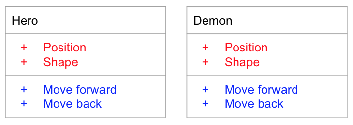
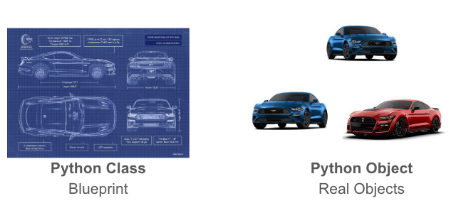
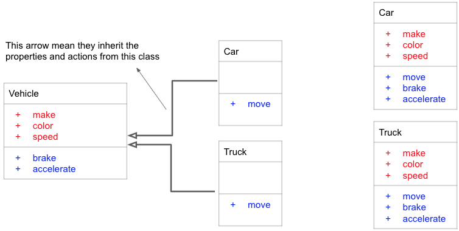
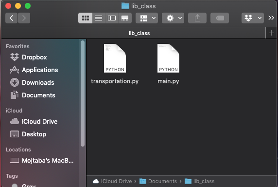

Objects and Modules
Having tried to build our simple game, you might have noticed that perhpas the hardest part was planning the functions that you need and how to connect pieces of your code. This is always a critical step in programming, and becomes extraordinarily hard for larger and more complext programs. A very interesting approach in programming that helps us think better about our programs and build them easier is called Object Oriented Porgramming. In this chapter we see how we can build our game a lot easier with objects that we are building and even use some objects that are built by others.
Think Objects
What is an object? Objects in programming are very similar to objects we have in real world. We define each object with a set of two thigns:
- Properties: how it is and looks like. For example color, size, location, etc.
- Actions: what it can do. For example runs, moves, eats, etc.
Building a car object
Let's imagine a car. If you wanted to define a car in your program as an object, what do you think the properties and actions for a car would be? Of course there are thousands of things that a car can do (move, stop, turn, play music, heat up seats, etc.) and plenty of properties a car has (color, make, number of bolts, amount of gas, etc.). But the important thing to remember for bringing it as an object to your program is which of those thousands of properties and actions are what you need in your program. You only need to choose the ones that your program needs. We will talk a bit more about that in a bit. For example, for a simple program, your car objects may only need these:
- Properties:
- make
- color
- speed
- Actions:
- accelerate
- brake
Now try to figure out the objects that we need for our simple game and properties and actions that they have. Two objects that we definitely need are our game hero and demon. Using the same diagrams we used for the car, we can have these for our hero and demon character, when we are building them into objects in our program.
Objects in python
Class
 Python uses classes to create an object. A class is like a blueprint to create something. You give this blueprint to Python and it creates an objects for you exactly as you asked. For example, this is how we define a car class that has a single action, move, in Python.
# Defining a car class in Python
class Car:
def move(self):
print('The car is moving.')
In this code we have class Car which tells Python we are about to define a class. The block of code (remember tabs) that comes after this line is the definition of this class. In this block we have a function called move. It is a simple function that just prints "The car is moving.". Functions that define actions for an objects MUST have self as their first parameter. It is very important that you remember this.
Objects
Now that we have a class, we can use it to create and object. In other words, now that we told Python how our Car object looks like, we are going to tell python to create one for us. You can simply create an object from you class by callig your class like a function: my_car = Car(). The variable that this returns, my_car, is your object. Now, you can call actions (functions) from your object by using a "." after your object and then the name of the action you want. When calling the functions from an object, Python will put the value of self inside your function; you should NOT do it yourself.
# Calling actions/functions from an object.
class Car:
def move(self):
print('The car is moving.')
# Creating an object using Car class and storing it in a variable
my_car = Car()
# Now we have an object called my_car
# Calling the move function from my_car object
my_car.move()
Save a file, for example name it cars.py, with the code on your file and run it. This will be the output when you run this Python code:
The __init__ function
The most important function in every object is its __init__ function. Every class in Pyhton has an __init__ function. If you don't add it yourself, like we did with the car class here, Python will add that for you when it runs your code. You saw that when you want to create an object you call its class name, for example my_car = Car() to create a my_car object from the Car class. When Python is creating your object, it first runs the __init__ function for its class. In fact, we call this function __init__ which is the short form for initialize.
Most of the times Python programmers use __init__ function to add properties to their objects. Think about it this way: __init__ function is where you tell Python how your object is going to look like right after it was created. Properties in an object are like variables but we put a self. in front of their names to say that they belong to that object. For example, this is how we make a red ford car object in Python. As you can see it also has the move function.
# Defining a Red Ford car object
class Car:
def __init__(self):
self.make = 'Ford'
self.color = 'red'
def move(self):
print('The car is moving.')
The properties of an obejct are like any other variable. But you
# Properties of an object
class Car:
def __init__(self):
self.make = 'Ford'
self.color = 'red'
def move(self):
print('The car is moving.')
my_car = Car()
print('My car is made by ' + my_car.make)
print('The color of my car is ' + my_car.color)
And the output of this is
The color of my car is red
So far our Car class has been always creating one type of car: red Ford. But how do we make it to create other types of cars? The answer is usign the __init__ function. As we said, __init__ function is just a function that belongs to our object. Its first variable is self (which we don't usually thouch), but we can have other variables to it. For example
# Properties of an object
class Car:
def __init__(self, make, color):
self.make = make
self.color = color
# Finding out the country it was made baseon on its maker.
if make == 'Ford' or make == 'GM':
self.made_in = 'US'
elif make == 'Honda' or make == 'Toyota':
self.made_in = 'Japan'
elif make == 'BMW':
self.made_in = 'Germany'
else:
self.made_in = '???'
def move(self):
print('The car is moving.')
# Creating an object for my car
my_car = Car('Ford', 'red')
print('My car is made by ' + my_car.make)
print('The color of my car is ' + my_car.color)
print('My car is made in ' + my_car.made_in)
print('---------')
# Creating an object for your car
your_car = Car('Honda', 'black')
print('Your car is made by ' + your_car.make)
print('The color of your car is ' + your_car.color)
print('Your car is made in ' + your_car.made_in)
The color of my car is red
My car is made in US
---------
Your car is made by Honda
The color of your car is black
Your car is made in Japan
You can also read and change the values of the properties from inside the functions of a class. Just do not forget that you need to have self. in front of the variables that keep the properties of an object.
# A car that accelerates and brakes.
class Car:
def __init__(self):
# We set the initial speed to 0
# because the car was just created and doesn't move.
self.speed = 0
def accelerate(self):
self.speed = self.speed + 1
print('Car accelerated to the new speed ', self.speed)
def brake(self):
if self.speed < 1:
print('The car has stopped. No more braking.')
else:
self.speed = self.speed - 1
print('Car reduced its speed to ', self.speed)
# Creating an object for the car
some_car = Car()
# Calling accelerate 3 times.
for i in range(3):
some_car.accelerate()
# Calling brake 5 times.
for i in range(5):
some_car.brake()
Car accelerated to the new speed 2
Car accelerated to the new speed 3
Car reduced its speed to 2
Car reduced its speed to 1
Car reduced its speed to 0
The car has stopped. No more braking.
The car has stopped. No more braking.
Objects inside other objects
The properties of class can be other objects too. Just don't forget that each time you want to use the properties of an object you need to add a ".". For example:
# Having a car and a truck
class Car:
def __init__(self, make):
self.make = make
class Parking:
def __init__(self, car):
# See the name of the object property doesn't have to be the same as function argument
# The property variable name is "car_in_parking" but function argument name is "car"
self.car_in_parking = car
my_car = Car('Ford')
my_parking = Parking(my_car)
print("The car in my parking is made by ", my_parking.car_in_parking.make)
new_car = Car('Honda')
# Chaning the car in the parking
my_parking.car_in_parking = new_car
print("The new car in my parking is made by ", my_parking.car_in_parking.make)
The new car in my parking is made by Honda
Inheritance: how not to repeat the code.
Let's imagine you wanted to also have a Truck class that creates an objects of type truck for you. Your truck object is going to have everything that car did plus it can carry load. One way of doing it is like this:
# Having a car and a truck
class Car:
def __init__(self, make, color):
self.make = make
self.color = color
self.speed = 0
def move(self):
print('The car is moving.')
def accelerate(self):
self.speed = self.speed + 1
print('Accelerated to the new speed ', self.speed)
def brake(self):
if self.speed < 1:
print('Stopped. No more braking.')
else:
self.speed = self.speed - 1
print('Reduced speed to ', self.speed)
class Truck:
def __init__(self, make, color):
self.make = make
self.color = color
self.speed = 0
def move(self):
print('The truck is moving.')
def accelerate(self):
self.speed = self.speed + 1
print('Accelerated to the new speed ', self.speed)
def brake(self):
if self.speed < 1:
print('Stopped. No more braking.')
else:
self.speed = self.speed - 1
print('Reduced speed to ', self.speed)
def carry_load(self):
print('The truck is carrying load')
my_car = Car('frod', 'red')
my_truck = Truck('GM', 'blue')
Here we have exactly repeated three functions (__init__, accelerate, brake). Once for Car class and another time for Truck class. There is a simple way to avoid this in programming, and it is by having two or more obejcts be a child of some other object. If an object is the child of another object, it means that it can use all the functions and properties of its parent. For example, we know that car and truck are both vehicles, so we can have another class called Vehicle. By putting everything that they have in common in the Vehilce class, and making sure that both Car and Truck are children classes of the Vehilce, we don't have to repeat them. The class digarams for Car and Truck classes looks like the left image below. Compare that to the same calsses without using inheritance on the right to see ho much we are reducing our repeated code.
In the above diagram, the Car and Truck objects on left side and right side are technically the same. The only difference is that objects on the right side are inheriting most of their properties and actions from their parent class, which is Vehicle.
# Having a car and a truck
class Vehicle:
def __init__(self, make, color):
self.make = make
self.color = color
self.speed = 0
def accelerate(self):
self.speed = self.speed + 1
print('Accelerated to the new speed ', self.speed)
def brake(self):
if self.speed < 1:
print('Stopped. No more braking.')
else:
self.speed = self.speed - 1
print('Reduced speed to ', self.speed)
class Car(Vehicle):
def move(self):
print('The car is moving.')
class Truck(Vehicle):
def move(self):
print('The truck is moving.')
def carry_load(self):
print('The truck is carrying load')
my_car = Car()
my_truck = Truck()
Here we used Car(Vehicle) and Truck(Vehicle) instead of just Car and Truck. By adding the extra (Vehicle) in front of the class name, we are telling Python that this class that we are defining is a child of the Vehicle class. So, it inherits all the propertis and action/functions that already exists in the Vehicle class, and we don't have to define them again.
Notice that Car(Vehicle) and Truck(Vehicle) each have a function called move that is different between them. We cannot have this function in the Vehicle class, because it is different between Car(Vehicle) and Truck(Vehicle). Also, as we said earlier Truck(Vehicle) has the extra carry_load function. Only objects that are made with this new Truck(Vehicle) class can call this function, not the Car(Vehicle) or even Vehicle objects.
Importing Modules
Large programs may have thousands of classes. It is really hard to keep them all in the same file. Here is when we build modules. In simple terms, the code that you have inside your file is a module. When you see your code is getting too large, or it is hard to keep it all in a single file, you can separate it into modules, and save your code in different files. When you want to use what you already have in another file in your current code, you use import. It makes more sense with the next example:
Create two files in the same directory, like the image you see below. Here, I am going to keep my classes inside the transportation.py file, and use main.py as my main file that I am writting my main code in.
# This is the transportation.py file
class Vehicle:
def __init__(self, make, color):
self.make = make
self.color = color
self.speed = 0
class Car(Vehicle):
def move(self):
print('The car is moving.')
class Truck(Vehicle):
def move(self):
print('The truck is moving.')
def carry_load(self):
print('The truck is carrying load')
# This is the main.py file
# It tells Python that we are going to use what's inside this file
import transportation
# We are using the Car class define inside the transportation file
my_car = transportation.Car('Ford', 'red')
print('My car is made by ', my_car.make)
print('The color of my car is ', my_car.color)
Now if you run the main.py file (python main.py) you see this output.
The color of my car is red
When you ran main.py, Python opened up the transportation.py file, because you imported it, and now you could access it in your main.py file by transportation..
This works also with functions that you have in other files. Now, imagine you have two files again. One is called main.py and the other one function_module.py. See the code that we have in these two files below.
# This is the function_module.py file
def MyFunction():
print('Hello from another module.')
# This is the main.py file
# Importing the module that has our function in it
import function_module
function_module.MyFunction()
Here we use the MyFunction from function_module.py file/module inside our code that is in main.py file. All we need to do is to first import the function_module.py file by using import function_module, and then calling the MyFunction by adding the name of that module and then a "." in front of it (see the code above). This will be what you see if you run main.py code.
Python Standard Library
There are some modules that python has creatd for you and know where they are. So, you can import them and use them directly. These modules are made to make it easier for you to program your code, and don't have to rewrite everything by yourself. These moduels are known as Python Python Standard Library. There are many modules you can use in the standard library. Here we are introducint two important ones.
math module
Python math module has a large number of functions that are used in Mathematics. For a full list of all of them see this page. Here are some of the simple ones:
# This tells python that we are using the math module
import math
# math.sqrt finds square root of a number
print('Square root of 64 is ', math.sqrt(64))
print('Square root of 5 is ', math.sqrt(5))
# math.factorial finds the factorial of a number
# The factorial of a number is that number multiplied
# all the positive natural numbers smaller than it. For example:
# Factorial of 5 is 5 * 4 * 3 * 2 * 1
print('Factorial of 7 is', math.factorial(4))
Square root of 5 is 2.23606797749979
Factorial of 7 is 24
random module
This module helps you generate random numbers. We need random numbers in programs such as games (hint hint 😜). Using this module helps you build things such as rolling a die in a game.
# This tells python that we are using the random module
import random
# math.randint gives you random number between two numbers
# This is how we role a die in Python
number = random.randint(1, 6)
print('You rolled ', number)
This is my output for the above code. Remember yours might be different.
The game
OK, now with everything that we have learned so far. We can redesign our game uing objects? Try to figure out what properties and actions your objects need. Then see how you are going to organize your code into modules. I have a possible solution that you checke by clicking the solution link below. But try not to cheat and do your best to have your own solution, then check the one here.
Everything is an object in Python
Even if you did not know it, you have been working with objects from the first day of this class. All the variables (float, int, list, dictionary, string) were objects. This means that many of these objects already had actions/functions we could use. Here are some of the interesting methods for variables you have worked with so far.
List
Adding something at the end of a list
# 'append' will add something to the end of a list
myList = [4, 5]
myList.append(7)
print(myList)
Counting number of items in a list
# 'count' will count how many of an item is in your list
myList = [4, 3, 5, 3, 8, 3, 2, 3, 9, 3]
print(myList.count(3))
print(myList.count(8))
1
String
Changing the capitalization
# 'upper' and 'lower' functions will return the upper or lower case of your string
myString = "New Providence"
lower_string = myString.lower()
print(lower_string)
upper_string = myString.upper()
print(upper_string)
NEW PROVIDENCE